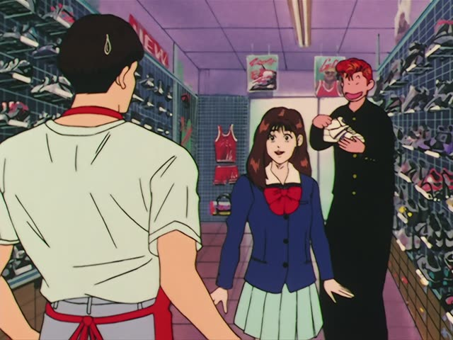

～てもいい
| Polite | ～てもいいです(か) |
|---|---|
| Casual | ～てもいい・～ていい ていい: shorter, spoken |
Same meaning: "it's okay to". Only the politeness changes.

Slam Dunk · Episode 20
すみません 試着してもいいですか。
"Excuse me, may I try this on?"
てもいい after a verb means it's okay to do it: allowed, or fine. It goes on the て-form: 試着する (try on) → 試着して + もいい.
To ask for permission, add か. On this card, in a shop: 試着してもいいですか = "may I try this on?", polite. Casual: てもいい？

YouTube · video
もうちょっと、感度早くしてみてもいいかな。
"Maybe I can try making the sensitivity a bit faster." [changing a game setting]
On this card, してみる (try) → してみてもいい, and かな makes it "maybe I could...".
Quick Examples
In a shop, you want to try on a jacket.
着てもいいですか？
"Can I try it on?"
着る ("put on") → 着て + もいいですか = "may I put it on?", "can I try it on?".
PoliteAt your friend's place, you're thirsty.
これ、飲んでもいい？
"Can I drink this?"
飲む ("drink") → 飲んで + もいい = "is it okay to drink?". Casual: no ですか.
CasualThe teacher before the test.
辞書を使ってもいいですよ。
"You can use a dictionary."
使う ("use") → 使って + もいいです = "you may use it". よ: telling them it's allowed.
PoliteYour friend looks tired.
もう帰っていいよ。
"You can go home now."
帰る ("go home") → 帰って + いい = "you can go home". In speech the も often drops.
CasualWith and without
写真を撮りますか？
"Will you take a photo?" Just asking what someone will do.
写真を撮ってもいいですか？
"May I take a photo?" Asking if it's allowed.
Examples from Media
Kekkon Dekinai Otoko · Episode 12
行ってもいいですよ。
"You can go, you know."
1 Litre of Tears · Episode 3
ひとつ聞いてもいいですか？
"Can I ask you something?"
聞く ("ask") → 聞いて + もいいですか = "may I ask?". ひとつ: "one thing".

YouTube · video
あ、でもリチウムとか取りに行ってもいいかもしれんな。
"Oh, but maybe I could go get some lithium."
行く → 行って. かもしれん is a casual "maybe".
1 Litre of Tears · Episode 2
飼ってもいいの？
"We can keep it?"
Kotaro Lives Alone · Episode 8
触ってもいいのか？
"I'm allowed to touch it?"
Dungeon Meshi · Episode 4
休んでいてもいい。
"You can rest."

Shirokuma Cafe · Episode 20
一緒に行ってもいい？
"Can I go with you?"
Asking permission: て-form + もいい.

Shirokuma Cafe · Episode 36
豆腐入れていい？
"Can I put the tofu in?"
Casual speech can drop the も.
Further Reading
A Dictionary of Basic Japanese Grammar
Entry "~temo ii" · pp. 471–473
Tae Kim's Guide to Japanese Grammar
Expressing “must” or “have to” · Saying something is ok to do or not do